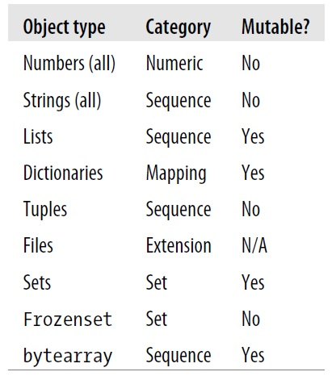

# Assign the number 2 to the variable 'my_dogs'
my_dogs = 2Lecture 2 - Data Types in Python


- 2.1 Introduction
- 2.2 Numbers
- 2.3 Strings
- 2.4 Lists
- 2.5 Dictionaries
- 2.6 Tuples
- 2.7 Sets
- 2.8 Other Data Types
- 2.9 String Formatting
- References
The figure below lists the main data types in Python, and provides information about the category and mutability of the data types.

Figure source: Reference [1].2.1 Introduction
Python is an interpreted, high-level, general-purpose programming language. Created by Guido van Rossum and first released in 1991, Python’s design philosophy emphasizes code readability. Its language constructs and object-oriented approach aim to help programmers write clear, logical code for small-scale and large-scale projects. Python interpreters are available for many operating systems. In recent years, Python has become the primary language for Machine Learning and Data Science applications.
The Python Software Foundation (PSF) is a non-profit organization that manages and directs resources for Python development. Python 3.0 was released in 2008, and it was a significant revision of the language that is not entirely backward-compatible, and much Python 2 code does not run unmodified on Python 3. This course makes use of Python 3.
Dynamic Typing
Python uses dynamic typing, meaning that we don’t need to declare the type of variable when writing the code, and the type is determined at runtime based on the assigned value. Therefore, we can reassign different data types to variables. This makes Python very flexible in assigning data types, and it differs from other languages that are statically typed (such as Java, C, C++) and require to declare the type of a variable before using it, and the type is fixed after it is declared.
# Show the variable 'my_dogs'
my_dogs2# Reassign the list to the variable 'my_dogs'
my_dogs = ['Sammy', 'Frankie']# Show the variable 'my_dogs'
my_dogs['Sammy', 'Frankie']In the above example, the number 2 was first assigned to the variable my_dogs, and afterward the list ['Sammy', 'Frankie'] was assigned to the variable my_dogs.
When we create a variable name in Python, we reserve a memory location to store an object. E.g., the variable name my_dogs first acts as a reference to the memory location which holds the number 2. Or, we can think of the variable as a pointer to the memory location where the value 2 is stored. Whenever we use the variable my_dogs in our code, Python will retrieve the value 2 from the memory location and associate it with the name my_dogs. By assigning the list ['Sammy', 'Frankie'] to the variable my_dogs, we instruct Python to associate the name my_dogs with a new memory location where the list ['Sammy', 'Frankie'] is stored.
Pros of Dynamic Typing
- Very easy to work with
- Faster development time
Cons of Dynamic Typing
- May result in unexpected bugs due to type-related errors, which can lead to hideous debugging sessions
- Requires to be aware of the type of objects
- Statically typed languages are more efficient because the compiler can optimize the code based on knowledge of the type of variables
Assigning Objects to Variables
When assigning objects to variables in Python, we need to obey the following rules for the names of variables.
- Names can not start with a number
- Names can not contain spaces, use
_(underscore) instead - Names can not contain any of these symbols
:'",<>/?|\!@#%^&*~-+ - It’s considered best practice (according to PEP8) that names are written with lowercase letters with underscores
- Avoid using Python built-in keywords like
listandstrin variable names - Avoid using the single characters
l(lowercase letter L),O(uppercase letter O) andI(uppercase letter I), since they can be confused with1and0
Variable assignment has the syntax name = object, where a single equal sign = is used as an assignment operator.
# Assign the integer object 5 to the variable name 'a'
a = 5# Show the variable 'a'
a5As we mentioned, dynamic typing in Python allows variables to be reassigned.
a = 10
a10Python also allows to reassign a variable with a reference to the same object.
# Add 15 to the current value of 'a' and assign it to 'a'
a = a + 15
a25Python allows using shortcuts to add, subtract, multiply, and divide numbers with re-assignment using +=, -=, *=, and /=.
For instance, a += 10 is equivalent to a = a + 10
# a = a + 10
a += 10
a35# a = a * 2
a *= 2
a70Determining Variable Type with type()
Python offers several built-in functions, which can perform actions on objects. For instance, we can check the type of the object that is assigned to a variable using Python’s built-in function type().
type(a)intIn the above example, the type of the variable a is integer.
# In Python we create tuples with parentheses
a = (1,2)type(a)tupleIt is also important to note that the double equal sign operator == in Python is used to test the equality of two expressions, whereas the single equal sign operator = is used to assign objects to variables.
Also, testing for inequality is performed with the not equal operator != .
The operators greater than >, less than <, greater than or equal >=, less than or equal <= perform as would generally be expected.
2.2 Numbers
Python has several various types of number objects.
Integers are whole numbers, and can be positive or negative. For example: 2 and -2.
Floating point numbers in Python have a decimal point, or use an exponential (E) to define the number. For example, 2.0 and -2.163 are examples of floating point numbers. 4E2 (4 times 10 to the power of 2 = 400) and 1E-3 (3 times 10 to the power of -3 = 0.001) are also examples of floating point numbers in Python.
Other types of number objects that are less frequently used include:
- Complex numbers, have real and imaginary parts, e.g., 3+4j
- Decimal numbers, have control over the precision and rounding of numbers, e.g.,
Decimal('0.1')(see examples in the next section) - Fractions, are rational numbers with numerator and denominator, e.g.,
Fraction(1,3)= 1/3.
Basic Arithmetic Operations
# Addition
2+13# Subtraction
2-11# Multiplication
2*24# Division
3/21.5# Floor Division
7//41The floor division operator // (two forward slashes) truncates the decimal number without rounding, and returns an integer result.
If we just want the remainder after division, we use the % modulo operator.
# Modulo (remainder)
7%43# Power (exponentiation)
2**38# Can also do roots (e.g., square root is **0.5)
4**0.52.0# Order of operations followed in Python
# Precedence: Parenthesis, Exponentiation, Division, Multiplication, Addition, Subtraction
# E.g., multiplication has precedence over addition
2 + 10 * 10 + 3105# Can use parentheses to specify orders
(2+10) * (10+3)156Note that floating-point numbers are implemented in computer hardware as binary fractions (fractions of 0 and 1). As a result, many decimal fractions cannot be accurately represented as binary fractions. For example, the decimal number 0.1 results in an infinitely long binary fraction of 0.000110011001100110011…. Since our computer can only store a finite number of decimal places, this will only approximate the above binary fraction, but the approximation will not be equal to 0.1. Hence, such approximations of decimal numbers is the limitation of our computer hardware and not an error in Python.
# Note that display issue in Python, due to using binary fractions to represent float numbers
f3 = 0.1 + 0.1 + 0.1
f30.30000000000000004# One solution to that is to use decimal numbers, since they have rounding mechanisms to obtain exact representations
from decimal import Decimal
f4 = Decimal('0.1') + Decimal('0.1') + Decimal('0.1')
f4Decimal('0.3')If number types are mixed, Python will do the conversion.
# Mix int and float; Python will convert int to float first
a = 1 + 2.5
print(a)
type(a)3.5float# Convert between different types
a = 2
b = float(a)
print(b)
type(b)2.0floatc = int(b)
print(c)
type(c)2intWe can also use logic comparisons with numbers using <, >, >=, <=.
# Logic comparison
5<3FalseBuilt-in Mathematical Functions
Examples of built-in mathematical functions include: pow, abs, round, and others. These functions are built into the Python interpreter. We do not need to import any packages. Check the list of all built-in functions in Python: https://docs.python.org/3.10/library/functions.html
# Power (exponentiation)
pow(2,4)16round(3.006)3# Absolute value
abs(-3.4) 3.4# Check documentation for help about built-in functions
help(pow) Help on built-in function pow in module builtins:
pow(base, exp, mod=None)
Equivalent to base**exp with 2 arguments or base**exp % mod with 3 arguments
Some types, such as ints, are able to use a more efficient algorithm when
invoked using the three argument form.
Python Modules for Numerical Operations
The number of built-in mathematical functions is limited, and we can also import Python modules, such as math and random to perform mathematical operations. https://docs.python.org/3.10/library/math.html#module-math
import math
math.floor(3.006)3import random
# Return a random floating-point number in the range 0-1
r = random.random()
print(r)0.187100605885764832.3 Strings
A string is an immutable sequence containing letters, words, and other characters.
Strings are used in Python to record text information, such as names. Strings in Python are sequences, which means that Python keeps track of every element in the string, and we can use indexing to get particular elements in the sequence.
Creating a String
To create a string in Python we can use either single quotes or double quotes.
# Single word
'hello''hello'# Entire phrase
'This is also a string''This is also a string'# We can also use double quotes
"String built with double quotes"'String built with double quotes'Note that the code below shows an error, because the single quote in I'm broke the continuation of the single quotes in the string.
# Be careful with quotes!
' I'm using single quotes, but this will create an error'Cell In[39], line 2 ' I'm using single quotes, but this will create an error' ^ SyntaxError: unterminated string literal (detected at line 2)
You can use combinations of double and single quotes to get the complete statement.
"Now I'm ready to use the single quotes inside a string!""Now I'm ready to use the single quotes inside a string!"Printing a String
In Jupyter notebooks, writing a string in a cell will automatically output the string, however the correct way to display strings is by using a print function.
# We can simply declare a string
'Hello World''Hello World'# Note that we can't output multiple strings this way; only the last string is displayed
'Hello World 1'
'Hello World 2''Hello World 2'We can use a print statement to display a string, or multiple strings in a cell.
print('Hello World 1')
print('Hello World 2')
print('Use \n to print a new line') # \n prints a new line
print('\n')
print('See what I mean?')Hello World 1
Hello World 2
Use
to print a new line
See what I mean?We can also use the built-in function len() to check the length of a string. It counts all of the characters in the string, including spaces and punctuation marks.
len('Hello World')11String Indexing and Slicing
Since strings are sequences, Python can use indexes to call parts of the sequence.
Indexing starts at 0 in Python.
# Assign a string to the variable 's'
s = 'Hello World'# Show 's'
s'Hello World'# Print the string
print(s) Hello World# Check the type of 's'
type(s)str# Show first element
s[0]'H'Use the slicing operator : to perform slicing which returns the elements up to a designated index in the sequence.
# Grab everything past the first element all the way to the end of s
s[1:]'ello World'# Note that there is no change to the original s
s'Hello World'# Grab everything UP TO the 3rd index
s[:3]'Hel'The above slicing includes indexes 0, 1, and 2, and it doesn’t include the 3rd index. In Python, slicing is performed as up to, but not including.
# Return everything
s[:]'Hello World'We can also use negative indexing to go backwards.
# Last letter (one index behind 0 so it loops back around)
s[-1]'d'# Grab everything but the last letter
s[:-1]'Hello Worl'We can also use indexing and slicing notation to grab elements of a sequence by a specified step size (the default is 1). For instance, we can use two colons in a row :: and then a number specifying the frequency to grab elements.
# Grab everything, but go in steps size of 1
s[::1]'Hello World'# Grab everything, but go in step sizes of 2
s[::2]'HloWrd'# We can use step size of -1 to print a string backwards
s[::-1]'dlroW olleH'String Properties
Strings are immutable objects. It means that once a string is created, the elements within it can not be changed or replaced.
s'Hello World'# Let's try to change the first letter to 'x'
s[0] = 'x'--------------------------------------------------------------------------- TypeError Traceback (most recent call last) Cell In[60], line 2 1 # Let's try to change the first letter to 'x' ----> 2 s[0] = 'x' TypeError: 'str' object does not support item assignment
Other properties of strings include concatenation, i.e., we can concatenate strings.
s# Concatenate strings
s + ' concatenate me!''Hello World concatenate me!'# We can reassign s completely
s = s + ' concatenate me!'# Note that now s points to the entire sequence
print(s)Hello World concatenate me!We can also use the multiplication symbol * to create a repetition of a string.
letter = 'z'
letter*10'zzzzzzzzzz'Built-in Methods for Strings
Objects in Python can also have built-in methods. Differently from built-in functions in Python which can typically be used with different object types, built-in methods are specific to particular object types. Also, while built-in functions are called directly by their name (e.g., len(), or type()), build-in methods are called with a period followed by the method name, as in:
object.method(parameters)
In the above line, parameters are extra arguments we can pass into the method.
Here are some examples of built-in methods for strings.
s'Hello World concatenate me!'# Upper case the string
s.upper()'HELLO WORLD CONCATENATE ME!'# Lower case
s.lower()'hello world concatenate me!'# Split a string by blank spaces (this is the default)
s.split()['Hello', 'World', 'concatenate', 'me!']# Split by a specific element (doesn't include the element that was split on)
s.split('W')['Hello ', 'orld concatenate me!']# Check all built-in methods for the string s
dir(s)['__add__',
'__class__',
'__contains__',
'__delattr__',
'__dir__',
'__doc__',
'__eq__',
'__format__',
'__ge__',
'__getattribute__',
'__getitem__',
'__getnewargs__',
'__getstate__',
'__gt__',
'__hash__',
'__init__',
'__init_subclass__',
'__iter__',
'__le__',
'__len__',
'__lt__',
'__mod__',
'__mul__',
'__ne__',
'__new__',
'__reduce__',
'__reduce_ex__',
'__repr__',
'__rmod__',
'__rmul__',
'__setattr__',
'__sizeof__',
'__str__',
'__subclasshook__',
'capitalize',
'casefold',
'center',
'count',
'encode',
'endswith',
'expandtabs',
'find',
'format',
'format_map',
'index',
'isalnum',
'isalpha',
'isascii',
'isdecimal',
'isdigit',
'isidentifier',
'islower',
'isnumeric',
'isprintable',
'isspace',
'istitle',
'isupper',
'join',
'ljust',
'lower',
'lstrip',
'maketrans',
'partition',
'removeprefix',
'removesuffix',
'replace',
'rfind',
'rindex',
'rjust',
'rpartition',
'rsplit',
'rstrip',
'split',
'splitlines',
'startswith',
'strip',
'swapcase',
'title',
'translate',
'upper',
'zfill']2.4 Lists
A list is a mutable ordered sequence of elements, written as a series of items within square brackets.
Lists are the most general example of a sequence in Python. Unlike strings, they are mutable, meaning that the elements inside a list can be changed.
Lists are constructed with square brackets [] and commas separating every element in the list.
# Assign a list to the variable named 'my_list'
my_list = [1, 2, 3]Lists can hold different object types. For example, the following list contains strings, integers, and float numbers.
my_list = ['A string', 23, 100.232, 'o']
my_list['A string', 23, 100.232, 'o']We can think of lists as arrays of references (pointers) to objects with allocated memory. Each element in the list is a reference to an object (such as numbers, strings, lists, etc.), and not the object itself.
Just like with strings, the built-in function len() returns the number of items in the sequence of the list.
len(my_list)4List Indexing and Slicing
Indexing and slicing work just like in strings.
my_list = ['one', 'two', 'three', 4, 5]
# Grab element at index 0
my_list[0]'one'# Grab everything UP TO index 3
my_list[:3]['one', 'two', 'three']We can also use + to concatenate lists, just like we did for strings.
my_list + ['new item']['one', 'two', 'three', 4, 5, 'new item']Note that the above operation doesn’t actually change the original list.
my_list['one', 'two', 'three', 4, 5]To make the change permanent, we need to reassign the list.
# Reassign
my_list = my_list + ['add new item permanently']my_list['one', 'two', 'three', 4, 5, 'add new item permanently']We can also use the operator * for a duplication method similar to strings.
# Make the list double
my_list * 2['one',
'two',
'three',
4,
5,
'add new item permanently',
'one',
'two',
'three',
4,
5,
'add new item permanently']# Again, doubling is not permanent
my_list['one', 'two', 'three', 4, 5, 'add new item permanently']Lists indexing will return an error if there is no element at that index. For example:
my_list[100]--------------------------------------------------------------------------- IndexError Traceback (most recent call last) Cell In[82], line 1 ----> 1 my_list[100] IndexError: list index out of range
Built-in Methods for Lists
There are parallels between arrays in other programming languages and lists in Python. Lists in Python tend to be more flexible than arrays in other languages for two reasons: they have no fixed size (meaning we don’t have to specify the size of a list when we create one), and they have no fixed type constraint (like we’ve seen above we can mix different types of objects in a list).
Explained next are several built-in methods for lists.
# Create a new list
list1 = [1, 2, 3]Use the append method to permanently add an item to the end of a list:
# Append
list1.append('append me!')# Show
list1[1, 2, 3, 'append me!']Use pop to extract (“pop off”) an item from the list. By default, pop takes off the last index (i.e., with index -1), but we can also specify which index to pop off.
# Pop off the 0 indexed item
list1.pop(0)1# Show
list1[2, 3, 'append me!']# Assign the popped element; remember that the default popped index is -1
popped_item = list1.pop()popped_item'append me!'# Show remaining list
list1[2, 3]We can insert and remove elements from a list.
c = ['a', 'b', 'c']
# Insert at index 0
c.insert(0, 'a0')
print(c)['a0', 'a', 'b', 'c']# Remove
c.remove('b')
print(c)['a0', 'a', 'c']Note that remove removes a specific value (e.g., the value 'b' in the list c), while pop removes an item at a specific index.
# We can also use the statement del to remove the item at index 0
del c[0]
print(c)['a', 'c']We can use the sort and reverse methods with lists.
new_list = ['a','e','x','b','c']# Show
new_list['a', 'e', 'x', 'b', 'c']# Use reverse to reverse order (this is permanent!)
new_list.reverse()new_list['c', 'b', 'x', 'e', 'a']# Use sort to sort the list (in alphabetical order)
new_list.sort()new_list['a', 'b', 'c', 'e', 'x']# For list of numbers, sorting is in ascending order
list_of_numbers = [2, 4, 3, 7, 1]
list_of_numbers.sort()
list_of_numbers[1, 2, 3, 4, 7]Two lists can be combined into a single list by the zip function.
a = [1, 2, 3, 4, 5]
b = [5, 4, 3, 2, 1]
print(zip(a,b))<zip object at 0x000001BA0A852700>To see the results of the zip function, in the next cell we convert the returned zip object into a list. Note that the zip function returns a list of tuples. Each tuple represents a pair of items that the function zipped together. The order in the two lists was maintained.
print(list(zip(a,b)))[(1, 5), (2, 4), (3, 3), (4, 2), (5, 1)]Often the zip command is used inside of a for-loop. The following code shows how a for-loop can assign a variable to each collection that the program is iterating.
a = [1, 2, 3, 4, 5]
b = [5, 4, 3, 2, 1]
for x,y in zip(a,b):
print(f'{x} - {y}')1 - 5
2 - 4
3 - 3
4 - 2
5 - 1Nesting Lists
Python data structures support nesting, that is, we can have data structures within data structures. For example, a list inside a list is shown next.
# Let's make three lists
lst_1 = [1, 2, 3]
lst_2 = [4, 5, 6]
lst_3 = [7, 8, 9]
# Make a list of lists to form a matrix
matrix = [lst_1, lst_2, lst_3]# Show
matrix[[1, 2, 3], [4, 5, 6], [7, 8, 9]]We can again use indexing to grab elements, but now there are two levels for the index: the items in the matrix object, and the items inside that list.
# Grab the first item in the matrix object
matrix[0][1, 2, 3]# Grab the first item of the first item in the matrix object
matrix[0][0]1List Comprehensions
Python has an advanced feature called list comprehensions. This allows for quick construction of lists.
The basic syntax of list comprehensions is:
newlist = [expression for item in list]
It returns a new list by applying the expression to each item in the list, or any other iterable object.
# Apply x+10 to each element in the list
list2 = [1, 2, 3]
new_list = [x+10 for x in list2]
new_list[11, 12, 13]We can also add logic conditions to the list comprehensions as in the next example.
# Even numbers in the range 0-10
even_numbers = [x for x in range(10) if x%2==0]
even_numbers[0, 2, 4, 6, 8]# Squared elements in the even numbers list
even_squares = [x*x for x in even_numbers]
even_squares[0, 4, 16, 36, 64]2.5 Dictionaries
A dictionary is an unordered and mutable Python container that stores mappings of unique keys to values.
We’ve been learning about sequences in Python so far, and now we’re going to learn about mappings in Python. If you’re familiar with other programming languages, you can think of dictionaries as hash tables.
Mappings are a collection of objects that are stored by a unique key, unlike a sequence that stores objects by their relative position (index). This is an important distinction, since mappings won’t retain the order of the elements because each object is defined by a key.
Therefore, a Python dictionary consists of a collection of keys and associated values. A colon : separates each key from its value, and the keys and values are provided inside curly braces {}. The keys must be unique, and can appear only once in a dictionary. Also, the keys must be immutable objects, such as strings, integers, floats, or tuples. The associated values can be almost any Python object, and there are no restrictions.
Dictionaries are mutable, therefore the elements can be changed, added, and removed.
Constructing a Dictionary
# Make a dictionary with {} and : to signify a key and a value
my_dict = {'key1':'value1','key2':'value2'}my_dict{'key1': 'value1', 'key2': 'value2'}# Call values by their key
my_dict['key2']'value2'Dictionaries are very flexible and they can hold various data types.
# The values can be any object type
my_dict = {1:101, 2:102, 3:103}
# Call an item
my_dict[2]102my_dict = {'key1':123, 'key2':[12,23,33], 'key3':['item0','item1','item2']}
# Let's call items from the dictionary
my_dict['key3']['item0', 'item1', 'item2']# We can call an index on that value
my_dict['key3'][0]'item0'# Can even call methods on that value
my_dict['key3'][0].upper()'ITEM0'We can change the values in a dictionary, as in the following cell.
# Subtract 123 from the value
print(my_dict['key1'])
my_dict['key1'] = my_dict['key1'] - 100123#Check
my_dict['key1']23The keys in Python dictionaries are immutable, and we cannot change them. However, we can remove a key using pop() or del as in lists, and afterward add a new key with its associated value.
# Delete the key-value pair for 'key3'
del my_dict['key3']
my_dict{'key1': 23, 'key2': [12, 23, 33]}# Remove the key-value pair for 'key1'
my_dict.pop('key1')
my_dict{'key2': [12, 23, 33]}We can also create new keys and values by assignment. For instance, if we start with an empty dictionary, we can continually add key-value pairs to it.
# Create a new dictionary
d = {}# Create a new key through assignment
d['animal'] = 'Dog'# Can do this with any object
d['answer'] = 42# Show
d{'animal': 'Dog', 'answer': 42}Nesting with Dictionaries
Python has flexibility of nesting objects and calling methods on them. Let’s see a dictionary nested inside a dictionary.
# Dictionary nested inside a dictionary nested inside a dictionary
d = {'key1':{'nestkey':{'subnestkey':32}}}# Keep calling the keys
d['key1']['nestkey']['subnestkey']32Dictionary Built-In Methods
There are several built-in methods we can call on a dictionary.
# Create a dictionary
d = {'key1':1,'key2':2,'key3':3}# Method to return a list of all keys
d.keys()dict_keys(['key1', 'key2', 'key3'])# Method to return all values
d.values()dict_values([1, 2, 3])# Method to return all keys and values pairs
d.items()dict_items([('key1', 1), ('key2', 2), ('key3', 3)])2.6 Tuples
A tuple is a collection of objects which is ordered and immutable, and it is commonly written as a series of items in parentheses.
In Python, tuples are very similar to lists, with the main difference being that tuples are immutable sequences, unlike lists that are mutable sequences. Tuples are created similarly to lists, but with parentheses () instead of squared brackets [].
The basic characteristics of tuples include:
- They are ordered collections of objects: like lists and strings, tuples are positionally ordered collections of objects (i.e., they are sequences) that maintain a left-to-right order among their elements.
- Are accessed by offset: like strings and lists, items in a tuple are accessed by positional offset (not by key); therefore, they support indexing and slicing.
- Tuples are immutable sequences: like strings and lists, tuples are sequences. However, unlike lists that are mutable sequences, tuples are immutable sequences (meaning they can not be changed in place).
- Are fixed-length, heterogeneous, and arbitrarily nestable: because tuples are immutable, their size cannot be changed (without making a new copy). Tuples can hold any type of object, including other compound objects (e.g., lists, dictionaries, other tuples), and hence, they support arbitrary nesting.
- Tuples are arrays of object references: like lists, tuples are best thought of as arrays of references (pointers) to other objects with allocated memory.
Constructing Tuples
Tuples are constructed by using parentheses () with the items separated by commas.
# Creating a tuple
t = (1, 2, 3)
t(1, 2, 3)# Check the length of the tuple using len(), just like a list
len(t)3# We can also mix object types: e.g., strings, integer numbers, floating-point numbers
t = ('one', 2, 490.2)
# Show
t('one', 2, 490.2)# Tuples, lists, or dictionaries can be nested into other tuples
w = ('one', 'two', (4, 5), 6, ['r', 100])
w('one', 'two', (4, 5), 6, ['r', 100])# An empty tuple
u = ()
u()# A 1-item tuple
v = ('thing', )
v('thing',)Note that for a single-item tuple we need to place a comma after the item, that is, we use (item,) and not (item), since parentheses can also be used to enclose expressions like (1 + 2) * 3 = 9.
# Note that the output of this cell is not a tuple
# Since the displayed output of the cell is not in parentheses, it is an integer number, not a tuple
a = (3)
a3We can also use the built-in function type() to check the type of the variable a.
# The type of the variable a is integer number
type(a)int# This is a tuple
b = (3,)
b(3,)# The type of the variable b is tuple
type(b)tuple# Not a tuple
(1 + 4) * 315# This is a tuple: note that (1+4,) is the same as (5,), and when multiplied by 3, the tuple is repeated 3 times
(1 + 4,) * 3(5, 5, 5)The parentheses () can be omitted in the syntax, and tuples in Python can be created just by listing items separated with commas. Although the parentheses are mostly optional with tuples, there are a few cases when using parentheses is required, e.g., within a function call, or when nested in a larger expression. For beginners, it is recommended to always use parentheses, in order to avoid the above exceptions, and because they improve the code readability.
t = 'one', 2, 490.2
t('one', 2, 490.2)# A tuple with one item can be created just by adding a comma after the item without using parentheses
'hello',('hello',)Tuple Indexing and Slicing
Since tuples are positionally ordered collections of objects like strings and lists, indexing and slicing work for tuples.
t('one', 2, 490.2)# Use indexing just like in lists and strings
t[0]'one't[1]2t[-1]490.2# Slicing
t[0:2]('one', 2)Other sequencing operations, such as concatenation and repetition, are also supported for tuples, in a similar way as for lists and strings.
# Concatenation
(1, 'book') + ('notes', 4) (1, 'book', 'notes', 4)# Repetition
(1, 'thing') * 4 (1, 'thing', 1, 'thing', 1, 'thing', 1, 'thing')Because tuples are sequences, we can also use for loop iterations and list comprehensions to print the elements of tuples.
# Consider the following tuple
x = ('b', 'u', 'i', 'l', 'd', 'i', 'n', 'g')
x('b', 'u', 'i', 'l', 'd', 'i', 'n', 'g')# We can use a `for` loop iteration to print each of the items of the tuple on a separate line
for i in x:
print(i)b
u
i
l
d
i
n
g# A list comprehension can also be used to print each of the items of the tuple x on a separate line
l = [print(i) for i in x]b
u
i
l
d
i
n
gBuilt-in Methods for Tuples
There are built-in methods for tuples in Python, but not as many as for lists. Tuples do not have methods such as append(), remove(), extend(), insert(), and pop() due to their immutable nature.
# Show
t('one', 2, 490.2)# Use .index to enter an item and return the index
t.index('one')0# Use .count to count the number of times a value appears
t.count('one')1# Count the number of times 2 appears in the tuple
u = (1, 2, 3, 2, 1, 2)
u.count(2)3Tuple Immutability
To emphasize one more time that tuples are immutable, check the following examples.
# If we try to change the first element, we will get an error message
t[0] = 'four'--------------------------------------------------------------------------- TypeError Traceback (most recent call last) Cell In[160], line 2 1 # If we try to change the first element, we will get an error message ----> 2 t[0] = 'four' TypeError: 'tuple' object does not support item assignment
Because of their immutability, tuples can’t grow. Once a tuple is created, we can not add to it.
# We will get an error message
t.append('nope')--------------------------------------------------------------------------- AttributeError Traceback (most recent call last) Cell In[161], line 2 1 # We will get an error message ----> 2 t.append('nope') AttributeError: 'tuple' object has no attribute 'append'
We can, however, make a new tuple based on a current tuple.
t = (t[0], 7, t[2])
t('one', 7, 490.2)Conversion to Lists
Conversion to lists and back to tuples is straightforward.
# Tuple to list
l = list(t)
l['one', 7, 490.2]type(l)list# List to tuple
l2 = ['aa', 'bb', 5, 'cc']
t2 = tuple(l2)
t2('aa', 'bb', 5, 'cc')Tuple Unpacking
Tuple unpacking means pairing objects on the right side of the assignment operator = with targets on the left side by position, and assigning them from left to right.
# Unpacking the tuple into the individual items
y = ('GOOG', 120, 490.2)
order, shares, price = y
print(order)
print(shares)
print(price)GOOG
120
490.2print('Cost:', shares * price)Cost: 58824.0# Unpacking the tuple: two names are entered for a tuple with 3 items, resulting in an error
order, shares = y--------------------------------------------------------------------------- ValueError Traceback (most recent call last) Cell In[168], line 2 1 # Unpacking the tuple: two names are entered for a tuple with 3 items, resulting in an error ----> 2 order, shares = y ValueError: too many values to unpack (expected 2)
Named Tuples
Named tuples are an extended type of tuples that allow items to be accessed by both position and attribute name, similar to dictionaries. They are created by using the namedtuple function from the collections module.
# Import and create a named tuple
from collections import namedtuple
Rec = namedtuple('Record', ['name', 'age', 'jobs'])
# Assign a named-tuple record
bob = Rec(name='Bob', age=40.5, jobs=['dev', 'mgr'])
alice = Rec(name='Alice', age=36, jobs=['mgr']) # Access by position
bob[0]'Bob'bob[1]40.5# Access by attribute
bob.name, bob.jobs ('Bob', ['dev', 'mgr'])A named tuple can be converted to a dictionary, which allows key-based access to the items.
D = bob._asdict()
D{'name': 'Bob', 'age': 40.5, 'jobs': ['dev', 'mgr']}# Access by key
D['name']'Bob'When to Use Tuples
Although tuples are very similar to lists, tuples are not used as often as lists in programming. However, tuples are used when immutability is necessary; for instance, if in your program you are using an object and need to make sure it does not get changed, then a tuple provides convenient integrity.
2.7 Sets
A set is a collection of unique objects which is unordered and mutable, and are constructed by using the
set()function.
Sets support operations corresponding to mathematical set theory, such as intersection, union, etc. By definition, an item appears only once in a set, no matter how many times it is added.
Because sets are collections of objects, they share some behavior with lists and dictionaries. For example, sets are iterable, can grow and shrink on demand, and may contain a variety of object types.
However, since sets are unordered and do not map keys to values, they are neither a sequence nor mapping type.
Sets have a variety of applications, especially in numeric and database-focused work.
To create a set object, pass in a sequence or another iterable object to the built-in set function.
# Create a set from string
x = set('abcde')
x{'a', 'b', 'c', 'd', 'e'}# Create a set from list
x = set([2,3,4,5])
x{2, 3, 4, 5}# Create a set from tuple
x = set((5,6,7,8))
x{5, 6, 7, 8}The sets are displayed with curly brackets. This is similar to a dictionary, but sets do not have keys and values (or, they can be considered dictionaries with only keys and without any values).
Set Expressions
x = set('abcde')
y = set('bdxyz')# Union
x | y{'a', 'b', 'c', 'd', 'e', 'x', 'y', 'z'}# Intersection
x & y{'b', 'd'}# Difference
x - y{'a', 'c', 'e'}# Symmetric difference (XOR) - elements in either x or y, but not both in x and y
x ^ y{'a', 'c', 'e', 'x', 'y', 'z'}# Superset, subset
x > y, x < y(False, False)# Membership of a set
'e' in xTrueSets can also be created by adding elements to an existing set object.
# Create a set
z = set()# Add to set with the add() method
z.add(1)
z{1}# Add a different element
z.add(2)
z{1, 2}# Try to add the same element
z.add(1)
z{1, 2}We cannot add another 1, because a set has only unique elements.
For instance, we can cast a list with multiple repeat elements into a set to get the unique elements of the list.
# Create a list with repeats
list1 = [1, 1, 2, 2, 3, 4, 5, 6, 1, 1]
# Cast as set to get unique values
set(list1){1, 2, 3, 4, 5, 6}Built-in Methods for Sets
Similar to the set expressions shown above, there are built-in set methods for union, intersection, and other related operations.
x = set('abcde')
y = set('bdxyz')
# Same as x & y
z = x.intersection(y)
z{'b', 'd'}# Delete one item
z.remove('b')
z{'d'}Also, we can use for-loops with the elements of sets.
for item in set('abc'):
print(item * 3)aaa
ccc
bbb2.8 Other Data Types
Booleans
Python also has a Boolean data type with predefined built-in names True and False, that are basically just the integers 1 and 0.
# Assign the Boolean True object to 'a'
a = True
# Show
aTrueThe data type for True and False is bool.
type(a)boolWe can also use comparison operators to create Booleans.
# Output is boolean
1 > 2False# Is True the same as 1
True == 1TrueIn Python each object is either True or False, as follows:
- Numbers are false if zero, and true otherwise.
- Other objects are false if empty, and true otherwise.
bool(2)Truebool(0)Falsebool('book')Truebool('')Falsebool([1, 2])TrueThe None Object
We can use None as a placeholder for an object that we don’t want to reassign yet.
# None placeholder
b = None# Show
print(b)NoneFor instance, to initialize a list whose size is not known yet, we can use None to preset the initial size and allow for future index assignment.
# Initialize a list of size 5 with None
my_list = [None] * 5
# Show
my_list[None, None, None, None, None]# Assign strings to the first two elements
my_list[0] = 'apple'
my_list[1] = 'banana'
# Show
my_list['apple', 'banana', None, None, None]Note also that in Python the fixed values or the raw data that are assigned to variables or constants are called literals. Examples of Python literals include: numeric literals (e.g., the integer number 5, or float number 2.1), string literals (e.g., any string like 'hi' or "hello"), Boolean literals (True and False), special literal None, list literals (e.g., the list [1, 2, 3]), etc. Therefore, a literal is a sequence of characters or a single character that represents a fixed value in source code. Or, literals are the notation that we use to specify values in our code, which is converted by the Python interpreter into an object of the appropriate type.
2.9 String Formatting
String formatting allows injecting items into a string, rather than trying to chain items together using commas or string concatenation. As a quick comparison, consider:
player = 'Thomas'
points = 33
# concatenation
'Last night, '+player+' scored '+str(points)+' points.'
# string formatting
f'Last night, {player} scored {points} points.'
# The output of both concatenation and string formatting is the same:
'Last night Thomas scored 33 points.'There are three ways to perform string formatting.
- The oldest method involves placeholders using the modulo
%character. - An improved technique uses the
.format()string method. - The newest method, introduced with Python 3.6, uses formatted string literals, called
f-strings.
These three methods are described next.
Formatting with Placeholders
We can use %s to inject strings into print statements. The modulo % is referred to as a string formatting operator.
print("I'm going to inject %s here." %'something')I'm going to inject something here.We can pass multiple items by placing them inside a tuple after the % operator.
print("I'm going to inject %s text here, and %s text here." %('some','more'))I'm going to inject some text here, and more text here.We can also pass variable names.
x, y = 'some', 'more'
print("I'm going to inject %s text here, and %s text here."%(x,y))I'm going to inject some text here, and more text here.Note that there are two notations %s and %r that convert any Python object to a string using two separate methods: str() and repr(). Here, %r and repr() deliver the official or formal or raw string representation of the object, including quotation marks and any escape characters, wehreas %s and str() produce a readable of informal and user-friendly representation of an object. The repr() can be used to recreate the object, and is typically intended for debugging purposes.
print('He said his name was %s.' %'Fred')
print('He said his name was %r.' %'Fred')
# Note that in the output 'Fred' is displayed in quotationsHe said his name was Fred.
He said his name was 'Fred'.As another example, \t inserts a tab into a string. Note that %r output the raw string representation and ignored the slash \ in \t, therefore a tab was not inserted.
print('I once caught a fish %s.' %'this \tbig')
print('I once caught a fish %r.' %'this \tbig')I once caught a fish this big.
I once caught a fish 'this \tbig'.The %s operator converts whatever it sees into a string, including integers and floats. Similarly, the %d operator converts numbers to integers. Note the difference below.
print('I wrote %s programs today.' %3.75)
print('I wrote %d programs today.' %3.75) I wrote 3.75 programs today.
I wrote 3 programs today.Padding and Precision of Floating Point Numbers
Floating point numbers use the format %5.2f. Here, 5 is the minimum number of characters the string should contain, including the decimal point. These characters may be padded with whitespace if the entire number does not have this many digits. Next to this, .2f stands for how many numbers to show past the decimal point.
print('Floating point numbers: %5.2f' %(13.148))Floating point numbers: 13.15print('Floating point numbers: %1.0f' %(13.148))Floating point numbers: 13print('Floating point numbers: %1.5f' %(13.148))Floating point numbers: 13.14800# Note that 5 empty spaces will be added in front of the number, to make it a total of 10 characters
print('Floating point numbers: %10.2f' %(13.148))Floating point numbers: 13.15print('Floating point numbers: %25.2f' %(13.148))Floating point numbers: 13.15It is possible to use more than one operator (e.g., %s, %f, and %r) in the same print statement.
print('First: %s, Second: %4.2f, Third: %r' %('hi!',3.1415,'bye!'))First: hi!, Second: 3.14, Third: 'bye!'Formatting with the .format() Method
An improved way to format objects into strings for print statements is with the string .format() method. The syntax is:
'String here {} then also {}'.format('something1','something2')For example:
print('This is a string with an {}'.format('insert'))This is a string with an insertThe .format() method has several advantages over the %s placeholder method:
- Inserted objects can be called by index position.
print('The {2} {1} {0}'.format('fox','brown','quick'))The quick brown fox- Inserted objects can be assigned keywords.
print('First Object: {a}, Second Object: {b}, Third Object: {c}'.format(a=1, b='Two', c=12.3))First Object: 1, Second Object: Two, Third Object: 12.3- Inserted objects can be reused, avoiding duplication.
print('A %s saved is a %s earned.' %('penny','penny'))
# vs.
print('A {p} saved is a {p} earned.'.format(p='penny'))A penny saved is a penny earned.
A penny saved is a penny earned.Within the curly braces we can assign field lengths, left/right alignments, rounding parameters, and more.
# The field 0 has a length of 8 characters, and the next field 1 has a length of 10 characters
print('{0:8} | {1:10}'.format('Fruit', 'Quantity'))
print('{0:8} | {1:10}'.format('Apples', 3.))
print('{0:8} | {1:10}'.format('Oranges', 10))Fruit | Quantity
Apples | 3.0
Oranges | 10By default, .format() aligns text to the left, numbers to the right. We can pass an optional <,^, or > to set a left, center, or right alignment, respectively.
print('{0:<8} | {1:^10} | {2:>8}'.format('Left','Center','Right'))
print('{0:<8} | {1:^10} | {2:>8}'.format(11,22,33))Left | Center | Right
11 | 22 | 33We can precede the alignment operator with a padding character.
print('{0:=<8} | {1:-^10} | {2:.>8}'.format('Left','Center','Right'))
print('{0:=<8} | {1:-^10} | {2:.>8}'.format(11,22,33))Left==== | --Center-- | ...Right
11====== | ----22---- | ......33Field widths and float precision are handled in a way similar to placeholders. The following two print statements are equivalent.
print('This is my ten-character, two-decimal number:%10.2f' %13.579)
print('This is my ten-character, two-decimal number:{0:10.2f}'.format(13.579))This is my ten-character, two-decimal number: 13.58
This is my ten-character, two-decimal number: 13.58Note that there are 5 spaces following number: in the output, and 5 characters are taken up by 13.58, for a total of 10 characters. In {0:10.2f}, the number 0 is a positional argument index which indicates to use the first number in .format(); if there were more than one number in .format(), we can use different numbers to refer to each one. Similarly, 10 indicates the minumum number of characters, 2 is the precision specifying to format the output with two decimal places, and f indicates that the output is a float number.
Formatting with String Literals (f-strings)
Introduced in Python 3.6, f-strings offer several benefits over the older .format() string method described above. E.g., we can bring outside variables immediately into the string rather than pass them as arguments through .format(var).
name = 'Fred'
print(f"He said his name is {name}.")He said his name is Fred.Pass !r to call the raw string representation with the repr() method.
print(f"He said his name is {name!r}")He said his name is 'Fred'Float formatting follows the syntax {value:{width}.{precision}}.
Note the difference: with the .format() method the expression {value:10.4f}, with f-strings becomes {value:{10}.{6}}.
print("My 10 character, four decimal number is:{0:10.4f}".format(23.45678))
print(f"My 10 character, four decimal number is:{23.45678:{10}.{6}}")
print(f"My 10 character, two decimal number is:{23.45678:{10}.{4}}")My 10 character, four decimal number is: 23.4568
My 10 character, four decimal number is: 23.4568
My 10 character, two decimal number is: 23.46Note that with f-strings, precision refers to the total number of digits, not just those following the decimal point. This fits more closely with scientific notation and statistical analysis.
Unfortunately, f-strings do not pad to the right of the decimal point, even if precision allows it. In the following cell, zeros are not added to 23.47 although we set the precision to 6 (sigh).
print(f"My 10 character, two decimal number is:{23.47:{10}.{6}}")My 10 character, two decimal number is: 23.47If this becomes important, we can always use .format() method syntax inside an f-string.
print(f"My 10 character, four decimal number is:{23.47:10.4f}")My 10 character, four decimal number is: 23.4700References
- Mark Lutz, “Learning Python,” 5-th edition, O-Reilly, 2013. ISBN: 978-1-449-35573-9.
- Pierian Data Inc., “Complete Python 3 Bootcamp,” codes available at: https://github.com/Pierian-Data/Complete-Python-3-Bootcamp.
- Course T81 558:Applications of Deep Neural Networks, Washington University in St. Louis, Instructor: Jeff Heaton, codes available at: https://github.com/jeffheaton/t81_558_deep_learning